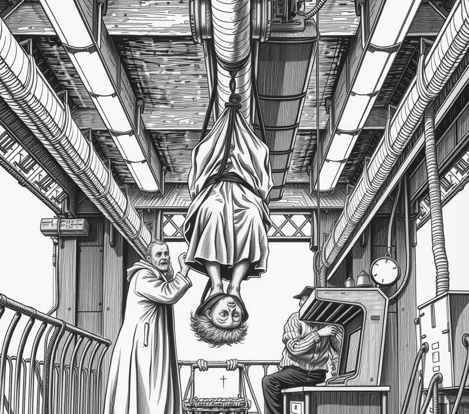

WAYSTATION DELTA . 14 May 5159

Brother Julian, who spent sixty years celebrating high mass strapped upside-down to a coolant pipe, has died aged ninety-one.
He arrived at the dark-space fuel station in 5099 as a junior clerk. Three weeks later, he declared artificial gravity a secular luxury and climbed into the roof struts. He never came down. He bound his boots to a steel girder above the altar, hanging face-down to bless workers during the shift change.
Station managers complained about grease drips on his vestments and holy water splashing into turbine vents. Julian ignored them. Over six decades, he preached four thousand sermons from the rafters, lowering communion wafers to the crew in a wicker basket attached to a landing pole.
"He was very strict about posture," said Sister Corin, who scrubbed engine oil from his chasuble. "He told us deckplates were a moral shortcut, and that real salvation was mostly hamstring tension."
His death on Friday followed heart failure. His body remained suspended until maintenance crews unbolted his section of pipe on Saturday to lower him.
Sunday service proved difficult. Deacon Silas attempted to preach from the floor, but forty crewmen spent the hour staring silently at the empty ceiling.
On Monday, Silas bought a harness; by Tuesday, standing was a heresy.